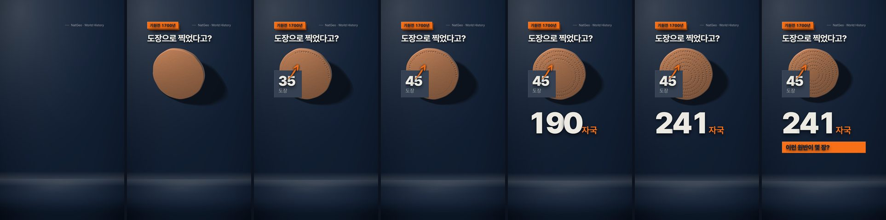
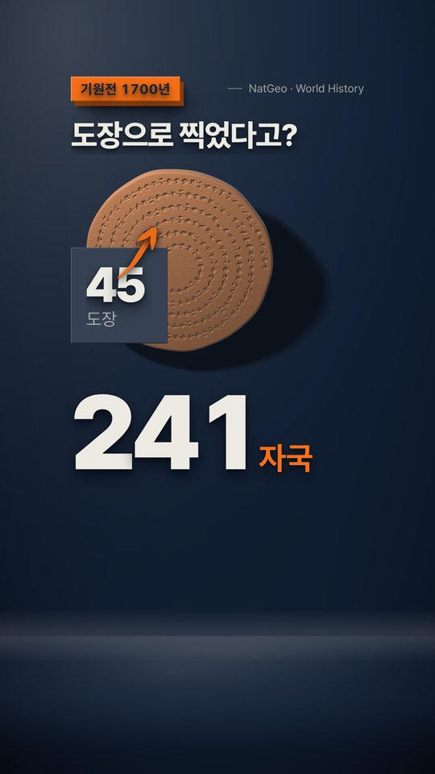
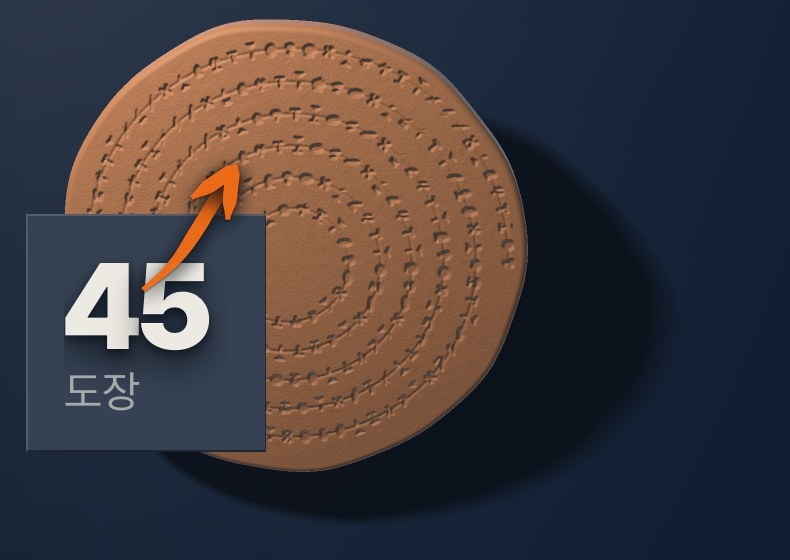
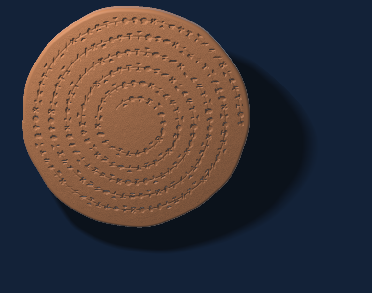
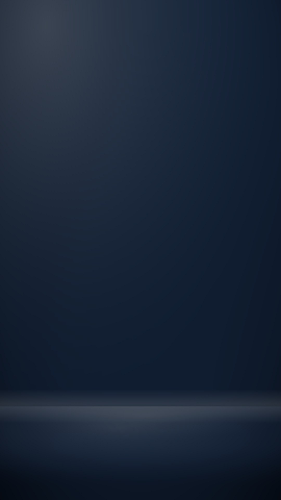

방송 그래픽 개편(09-02)으로 글자와 판은 맞았는데 화면에 세울 것이 없었다. 벡터 일러스트, 생성 이미지, 재질을 준 스튜디오 판을 차례로 만들어 재 보고, 넷째 판에서 답을 얻었다 — 판과 글자는 CSS 그대로 두고, 물체 하나만 그리지 않고 렌더한다. numpy 로 쓴 SDF 레이마처가 점토 원반을 프레임 72 장으로 굽고, 슬라이드는 그 시트의 번호만 옮긴다. 이 판을 0.52.0 에서 플러그인의 기본 편집 도해로 옮겼다.



| 판 | 물체 | 남은 것 | 못 넘은 것 |
|---|---|---|---|
| ① fineart-3d | CSS·SVG 로 그린 벡터 "3D" | 공간 구성, 카메라 시차 | 물체가 일러스트로 읽힌다 — 재질이 없다 |
| ② diorama | 그룹마다 생성 이미지 | 재질이 살았다, 실사 표식 획(굵기가 변하는 펜) | 그룹당 $0.2, 좌표를 회차마다 다시 잰다, 생성마다 물체가 조금씩 다르다 |
| ③ studio | 없음 — 판과 글자에 재질 | 키 라이트 하나에 맞춘 슬랩 재질(모서리·두께·닿은 그림자·퍼진 그늘), 사이클로라마 무대, 무대만 미는 시차 | 공간에 세울 물체가 없다 |
| ④ object | SDF 레이마처로 구운 시트 | ③ 그대로 + 재질이 있는 물체, 회차당 0원, 좌표는 사이드카가 잰다 | 형상이 하나(원반)다 — 새 형상은 sdf 함수 하나 |
③에서 확인한 것 하나가 이 판 전체의 규칙이다 — UI 카드와 방송 판의 차이는 그림자의 유무가 아니라 닿은 그림자의 유무다. 넓고 옅은 그늘만 있으면 카드가 떠 있고, 짧고 진한 그림자가 먼저 있으면 물건이 서 있다. 그래서 §4 의 「플레이트에 드롭섀도 금지」를 「닿은 그림자 없는 드롭섀도 금지」로 좁혔고 재질은 템플릿 머리 CSS 의 html.studio 규칙에만 두어 검사기가 저작 영역의 그림자는 그대로 막는다.

bake-object.py 가 굽는 마지막 프레임. 둥근 기둥 SDF, 점광원(방향광이면 평평한 얼굴이 한 밝기라 납작해진다), IQ 소프트 섀도, 자국 높이 지도를 법선으로 바꾼 자체 그늘, 두 주파수의 결, 세 주파수의 테두리 흔들림.
background-position 만 옮긴다. (그룹, 시각)마다 번호가 하나로 정해지므로 seek 계약 그대로고, 번호를 매 프레임 옮기는 비용은 0 이다(7.40 대 7.41fps). 한 겹 더 그리는 값만 1.13배다.| 항목 | 값 | 어떻게 |
|---|---|---|
| 굽기 | 4.9초/프레임, 72장 6분, ₩0 | M4 · 셀 760×600 · 2배 슈퍼샘플 |
| 시트 | 6840×4800 PNG 17.4MB (630 셀 때 webp 1.6MB) | 검사기가 webp 를 확장자로 막아 png 로 둔다. 디코드 메모리 131MB × 탭 수 |
| 캡처 | 물체 켬 7.35 / 끔 8.32 fps = 1.13배 | 같은 회차 안에서 번갈아(부하가 몇 배로 흔들린다). 판 재질은 2.49배 |
| 번호 옮기기 | 0 (7.40 대 7.41 fps) | 번호를 고정해 두고 재 봄 |
| 렌더러 통과 | 4그룹 594프레임 81초, 7.4fps, 경고 0, 존 100×99% | render-motion-slide.mjs --sheet --png-only --segs auto, 탭 넷 |
| 재굽기 | 시트 바이트 동일, 사이드카 file=assets/s5-obj.png | 같은 명령을 한 번 더 돌려 cmp — slides/assets/ 는 scenes.js 에서 다시 만들 수 있다 |
| 존 | 잉크 x210..897 · y419..934 (존 176..904 · 190..1350) | 벽 그림자가 테두리 밖 226px 까지 잉크. 630 셀에선 그림자가 셀 끝에서 직선으로 잘렸다(리뷰 지적) — 760 으로 넓히고 x 를 97 → −10 |
| 출처 줄 | 흐름에 두면 y1375..1408 — 존 아래 58px | flex gap 40 × 5 가 예산을 넘긴다 → 오른쪽 위 코너(202..236) |
| 결정성 | (2,1500)·(4,2000) 두 경로 모두 같은 번호 | 다른 seek 순서로 두 번 밟아 background-position 문자열 대조 |
| 계단 | 초당 3.5~6.7칸, 칸당 0.3° | 문장이 12~28 프레임을 쓴다. 자국은 원래 하나씩 찍히는 것 |
motion-slide-template.html — editorial 도해의 기본 바탕이 스튜디오 판(h.stage("flat") 로 옛 판). 슬랩 재질은 기존 부품 셀렉터 위에 걸려 h.tag · h.band · h.plate 호출이 그대로다. h.object(rg, id, {x, y, slot, out, html, aside}), h.mark.route(…, {pen:true}), h.foot(0, …, {corner:true}). 표식의 dashoffset 유령(경로 첫 좌표의 점, 화살촉 아래 갈래 선행) 수정.[data-sheet]: 프레임 번호를 (g, t) 로 세우고 --segs 에 늘어난다. data-ground 는 무대 드리프트를 그룹의 운동으로 안 센다. 배경 이미지는 decode() 까지 기다린다 — 시트가 크면 폰트만 기다린 첫 캡처가 빈 무대였다.bake-object.py — --shape disc --keys … --frames … 로 시트 png + 사이드카 js(기하·잉크 상자) + 미리보기. 의존은 numpy·Pillow.check-slide.js — 재질(box-shadow·text-shadow·drop-shadow)은 머리의 html.studio 규칙만 허용하고 저작 영역은 막는다. slide.object: 시트·사이드카·include·h.object·잉크 상자 존 검사. selftest 90 → 100.check-scenes.js — slide.object 형태 검사, object-move 프리미티브.안 들어간 것도 적는다. 형상은 원반 하나다 — 항아리·상자·기둥은 SHAPES 에 sdf 함수를 더해야 한다. 실제 유물·사람은 이 레인이 아니라 실사 레인(②로 이미 증명)이다. 시트는 png 라 17MB 인데, 검사기의 webp 차단(움직이는 webp 와 못 가른다)을 뚫는 것보다 큰 파일을 두는 쪽이 싸다고 봤다.